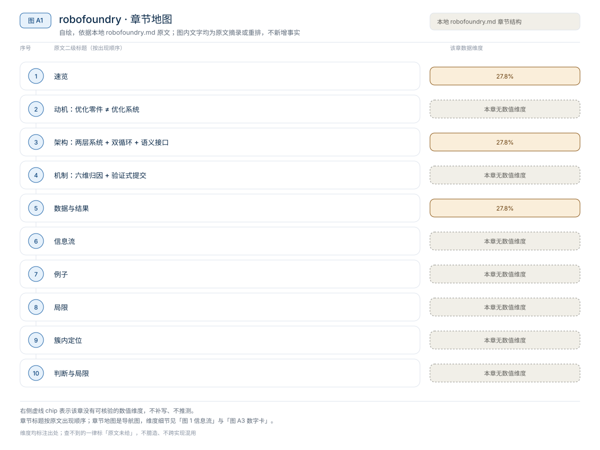
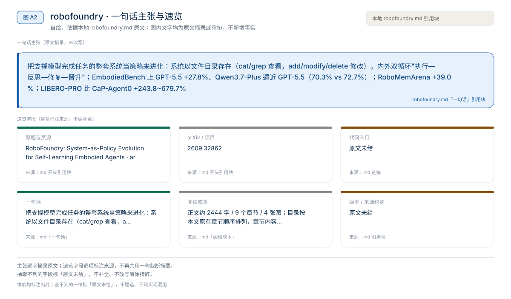
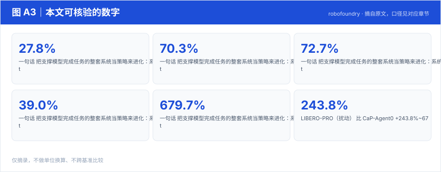
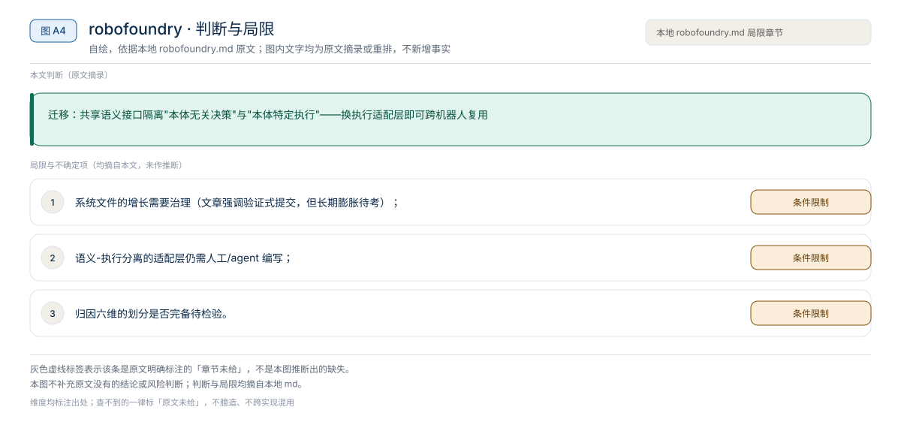

【Harness VLA · 代码即策略与技能发现】RAX 深读：把在线探索做成 Scaling Law，五大基准平均领先 37.4 个点
冻结通用 coding agent 直接连机器人感知/控制接口，把"在线探索"做成 scaling law：成功决策编译成程序、版本化入库，能力随探索预算单调增长
Harness01-代码即策略与技能发现2026
把支撑模型完成任务的整套系统当策略来进化：系统以文件目录存在（cat/grep 查看，add/modify/delete 修改），内外双循环"执行—反思—修复—晋升"；EmbodiedBench 上 GPT-5.5 +27.8%、Qwen3.7-Plus 逼近 GPT-5.5（70.3% vs 72.7%）；RoboMemArena +39.0%；LIBERO-PRO 比 CaP-Agent0 +243.8~679.7%
原题与资源：RoboFoundry: System-as-Policy Evolution for Self-Learning Embodied Agents · arXiv:2609.32862
一句话：把支撑模型完成任务的整套系统当策略来进化：系统以文件目录存在（cat/grep 查看，add/modify/delete 修改），内外双循环"执行—反思—修复—晋升"；EmbodiedBench 上 GPT-5.5 +27.8%、Qwen3.7-Plus 逼近 GPT-5.5（70.3% vs 72.7%）；RoboMemArena +39.0%；LIBERO-PRO 比 CaP-Agent0 +243.8~679.7%
阅读成本：正文约 2444 字 / 9 个章节 / 4 张图；目录按本文原有章节顺序排列，章节内容未改动。
目录（点击跳到对应章节）：

图 A1：本文章节地图（节点即原文 h2 标题）。自绘，依据本文，不新增事实。
| 项 | 内容 |
|---|---|
| 一句话 | 把支撑模型完成任务的整套系统当策略来进化：系统以文件目录存在（cat/grep 查看，add/modify/delete 修改），内外双循环"执行—反思—修复—晋升"；EmbodiedBench 上 GPT-5.5 +27.8%、Qwen3.7-Plus 逼近 GPT-5.5（70.3% vs 72.7%）；RoboMemArena +39.0%；LIBERO-PRO 比 CaP-Agent0 +243.8~679.7% |
| 冻结 | 基座模型参数（GPT-5.5 / Qwen3.7-Plus / 冻结 VLA 如 π₀.₅ 后端） |
| 演化 | 两个进化面：上下文面（活跃上下文 + 文件系统记忆：SAVE/RETRIEVE/UTILIZE）+ 技能面（原子技能→组合流程→失败恢复树） |
| 迁移 | 共享语义接口隔离"本体无关决策"与"本体特定执行"——换执行适配层即可跨机器人复用 |

图 A2：一句话主张与速览字段。自绘，依据本文，不新增事实。

图 A3：本文可核验的数字摘录。自绘，依据本文，不新增事实。
一个具体任务走一遍 · 本文可核验数字与字段速查（以下均摘自原文，未作推算）：
失败/低效先归因到六大能力维度——感知/推理/规划（决策能力）+ 保存/检索/利用（记忆管理）；只在对应进化面上提出修改，且必须验证有效才提交；复现出现的改进晋升到通用系统。
| 基准 | 结果 |
|---|---|
| EmbodiedBench | SOTA：GPT-5.5 +27.8%；Qwen3.7-Plus 70.3% ≈ GPT-5.5 72.7%（系统进化抹平模型差距） |
| RoboMemArena（长程记忆） | 超所有基线（含外部大模型辅助方法）至少 +39.0% |
| LIBERO-PRO（扰动） | 比 CaP-Agent0 +243.8%~679.7%（全扰动类型） |
| 真机 | 跨机器人、跨任务零样本迁移 + 部署后在线进化 |
RoboMemArena（长程记忆，SR / PS）
| 方法 | Overall | Transfer | Occlusion | Counting | Sequence |
|---|---|---|---|---|---|
| RoboFoundry | 53.5 / 72.8 | 70.5/78.1 | 38.3/57.6 | 55.2/82.5 | 75.2/92.1 |
| PrediMem | 38.5 / 55.2 | 22.5/45.2 | 27.3/38.4 | 45.7/69.3 | 72.5/89.5 |
| MemER | 27.3 / 49.1 | 20.0/36.1 | 16.4/33.2 | 27.1/65.1 | 65.0/79.1 |
| π0.5 | 21.5 / 38.7 | 20.0/42.8 | 12.7/17.2 | 14.3/50.9 | 60.0/71.6 |
| MemoryVLA | 15.0 / 35.3 | 15.0/37.2 | 7.3/13.1 | 14.3/55.1 | 37.5/65.2 |
LIBERO-PRO（task-wise 表）：RoboFoundry 各套件 95–100%，而 OpenVLA/π0 大多 0.0、π0.5/CaP-Agent0 在任务改向下大量归零。
论文无逐组件关闭的独立消融大表（设计选择以图表呈现）；核心对照是 System-as-Policy 整体 vs 记忆/双系统基线（上表 +26.2pp over 最强记忆基线 PrediMem）。
内循环：任务执行 → 轨迹 → 六维归因
外循环：对应进化面提修改（上下文面 / 技能面）
→ 后续执行验证 → 有效才提交 → 复现者晋升通用系统（文件目录）
语义接口（本体无关）→ 执行适配层（本体相关：VLA / 代码 / CuRobo）"收拾桌面"任务失败于"忘记抽屉里有遗留物"→ 归因为检索能力缺陷 → 上下文面新增规则"进入新区域先 RETRIEVE 该区域的历史记录"→ 下次执行验证有效 → 提交进通用系统 → 换一台机器人只需换执行适配层。
本文判断：迁移：共享语义接口隔离"本体无关决策"与"本体特定执行"——换执行适配层即可跨机器人复用
局限与不确定项（以下均摘自本文，未作推断）：

图 A4：局限与不确定项摘录。自绘，依据本文，不新增事实。
覆盖范围：本页新增的导读、目录、章节地图、数字卡与局限清单，均为原文信息的重排或摘录；正文、数据与实验结论未改动。